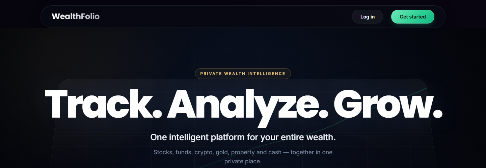

Software Development & Coding
Building and learning through responsive web development, programming and practical software projects.
HTMLCSSJavaScriptPythonJava
AI & MACHINE LEARNING · FINANCE · SOFTWARE DEVELOPMENT
“Building at the intersection of technology and finance.”
01 — AREAS OF INTEREST
Exploring how software, markets and thoughtful product engineering can make practical ideas useful.
Building and learning through responsive web development, programming and practical software projects.
Following market activity and studying businesses through financial statements, company metrics and research.
Connecting engineering and AI/ML learning to practical products, with attention to the problem a tool is meant to solve.
02 — SELECTED PROJECTS
A live personal-finance platform and a completed collaborative academic prototype.
01 / FINANCIAL TECHNOLOGY
Personal-finance planning and intelligence for clearer goals and informed decisions.

LIVE WEBSITE · WEALTHFOLIO.INWealthFolio is a live financial planning platform intended to give users a more connected view of their wealth.
Its product vision is to bring financial information that can be spread across accounts and tools into one clearer view, instead of leaving assets and goals disconnected.
The live site describes a portfolio view spanning these asset categories:
These are categories in the stated product vision; this list does not guarantee that every tracking method or integration is fully functional.
The broader aim is to help users organise financial goals, understand their overall position and explore investment choices with more context. Visit the live WealthFolio website for its current public overview.
The advanced financial intelligence and machine-learning component remains under development. AI models are not claimed to be trained or validated, and AI stock recommendations are not presented as deployed. No investment returns are guaranteed.
02 / COLLABORATIVE ACADEMIC PROJECT
A team-built prototype for pilgrimage planning, visitor services and safety.
DivyaPath is a collaborative academic prototype for pilgrimage planning and visitor support, bringing booking, journey planning and safety tools into one proposed platform.
Darshan slot booking with QR passes; simulation-based crowd and queue estimates; itinerary planning; a Hindi/English AI assistant with a rule-based fallback; and GPS-based safety and SOS flows.
DivyaPath's backend and core workflows were tested through an automated test suite, with all 19 of 19 tests passing. The project also evaluated its rule-based assistant fallback, which successfully handled 54 of 59 tested routing cases (91.5%).
DivyaPath brings a user-centred approach to digital pilgrimage services, translating a complex travel experience into a more connected and accessible platform. The project explores how technology can simplify coordination, improve visitor convenience and create a smoother journey from planning to completion.
03 — EXPERIENCE
Professional experiences across software development and financial research.
Goloka IT
Joshi Capitals
04 — RECOGNITION
Awards and academic presentations from my professional and academic journey.
Awarded Best Intern at Goloka IT on 13 March 2026.
Presented a research poster at the International Conference on Intelligent Computing and Networking (IC-ICN 2025).
05 — ABOUT ME
I’m studying Artificial Intelligence and Machine Learning at Thakur College of Science & Technology (TCET), Mumbai.
Alongside my studies, I’m interested in financial markets and how businesses work. I’ve explored both through web development experience and financial research, and I’m keen to build practical technology that connects with real needs.
I’m continuing to develop my skills in software, AI/ML and analysis through hands-on work and learning.
06 — TOOLKIT
A growing toolkit built through coursework, independent exploration, and hands-on experience.
07 — EDUCATION
Thakur College of Engineering and Technology
Thakur College of Science and Commerce
Shantinagar High School